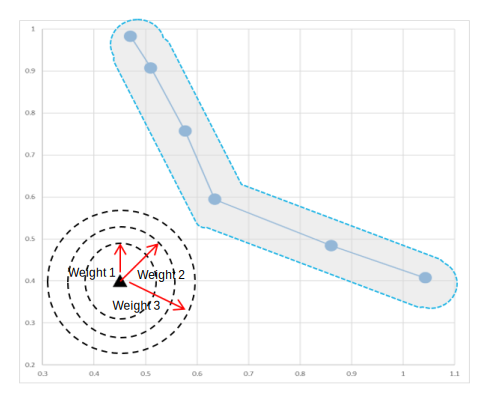
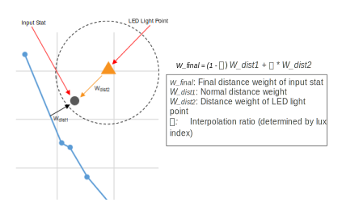

| AWB flash | |
Torch mode is the state in which the flash light is on persistently; the conventional flash mode is the state in which the flash light is on spontaneously. Therefore, the flash light is the strong light source during preview and video mode. Similar to LCD flash, the flash light is an additional light source that influences AWB estimation.
If the stat is in the vicinity of the LED light source point, the stat would have more
influence from the LED light. Thus, additional distance based weight is assigned to the
stat. The distance weight is assigned with respect to the concentric circles shown in
the diagram.

After assigning a distance weight with regard to the LED light point and the concentric circles, the final distance weight is computed by interpolation between two distance weights: one from the normal distance weight system and the other is from the LED light distance weight system.
The interpolation of two different distance weights represents a mixture of multiple
light sources. The interpolation is described in the diagram.
